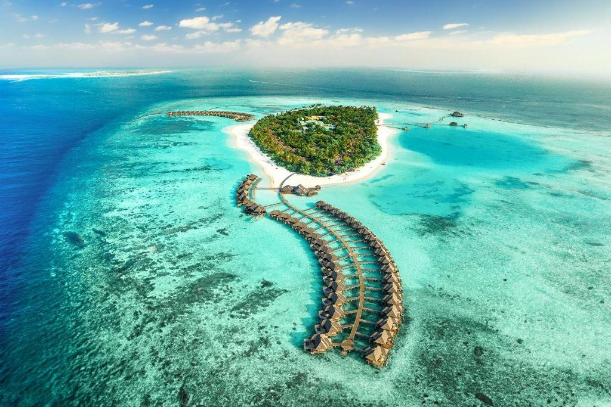

Gay scene hotspots, romantic getaways, group trips and Pride events, alongside an honest look at the countries where the law and the lived reality don't quite match, and the ones worth genuine caution. A complicated topic, covered properly.
"LGBTQ friendly" gets used two different ways, and mixing them up is where people get caught out. There's legal: whether same sex relationships are actually against the law where you're going. And there's cultural: how welcoming the place genuinely feels once you're there, which doesn't always line up with the law either way. Some countries are fully legal but socially conservative. Some are technically illegal on paper but see thousands of LGBTQ tourists a year without any issue, especially inside resorts. This guide covers both, honestly, so you can make an informed choice rather than guessing.
Laws and attitudes change, sometimes quickly, so treat this as a solid starting point rather than the final word. Before you book anywhere you're unsure about, I'd always check the official gov.uk foreign travel advice for LGBT travellers and the Human Dignity Trust map of criminalisation, both of which are kept up to date.
Tell me who's travelling and what you're after (a big Pride trip with friends, a quiet romantic week away, somewhere to properly switch off) and I'll match the destination to that, not just to what's popular.
Dedicated bars, clubs and beaches, and a genuinely visible scene rather than one or two venues tucked away.

Maspalomas and the Yumbo Centre make this one of Europe's biggest and longest running gay scenes, with bars, clubs and saunas all within walking distance of each other, plus a well known gay beach. Warm enough to visit year round.

A small, walkable town just outside Barcelona with a huge concentration of gay bars along one street, a gay beach, and a busy events calendar including Sitges Pride and International Bear Week.

Super Paradise and Elia beaches by day, a genuinely famous party scene by night. Busiest and most expensive in August around the XLSIOR festival, quieter and cheaper either side of peak summer.

A different kind of scene: underground clubs, a strong fetish and leather scene alongside more mainstream bars, and one of Europe's most liberal, anything goes attitudes.
Somewhere the focus is on the two of you, not the nightlife.

Whitewashed clifftop villages, caldera sunsets and infinity pools. Same sex marriage is legal in Greece, and Santorini is used to hosting same sex couples for both honeymoons and weddings.

Overwater bungalows over genuinely turquoise lagoons. Same sex marriage is legal in France and its territories, and the resorts here are well used to same sex couples booking the same honeymoon packages as everyone else.

Elegant lakeside villages, boat trips and long dinners. Italy doesn't have same sex marriage nationally, but recognises civil unions, and Lake Como's hotels are well used to same sex couples visiting for exactly this kind of trip.

Widely considered one of the safest, most respectful countries in the world for same sex couples day to day, even though same sex marriage isn't yet recognised nationally. Kyoto and Tokyo both suit a quieter, culture led trip.
Easy to get around as a group, plenty going on, and a good spread of bars and restaurants so nobody's stuck picking just one place every night.

Everything within walking distance of everything else, a huge range of apartments and villas that suit bigger groups, and enough going on that not everyone has to want the same thing every night.

The clubbing capital of the Mediterranean, with a proper gay scene alongside the island's bigger club nights, plus villas built for groups of friends.
Cities where being LGBTQ isn't the main event, it's just a normal part of a place that also happens to be great for a city break.

Canals, museums and one of the most progressive, welcoming cities anywhere in the world. The Netherlands was the first country to legalise same sex marriage, back in 2001.

Gaudi architecture, incredible food and the Eixample district (nicknamed "Gaixample") right in the centre of the city, so there's no need to pick between sightseeing and a good night out.

Consistently rated Africa's most LGBTQ friendly city, with a relaxed scene around De Waterkant, alongside Table Mountain, the winelands and safari trips further afield.

A genuinely easy, welcoming city to explore, with a huge Pride celebration each summer and one of the highest rates of public acceptance anywhere in Europe.
If you'd rather time a trip around one of the big ones, here's when the major events usually happen. Exact dates move every year, so I'll always confirm before you book.

| Destination | Usually held | What it's like |
|---|---|---|
| Sao Paulo, Brazil | June | The biggest Pride in the world by attendance, millions on the streets of one avenue |
| Madrid, Spain | Late June / early July | One of Europe's biggest, with a huge parade through the city centre |
| Amsterdam, Netherlands | Late July / early August | Famous canal parade, boats rather than a street march |
| New York City, USA | Late June | Marks the anniversary of the original 1970 Pride march |
| London, UK | Early July | Parade through central London finishing near Trafalgar Square |
| Brighton, UK | Early August | The UK's biggest Pride, a full weekend festival alongside the parade |
| Berlin, Germany | Late July | Parade finishing at the Brandenburg Gate |
| Stockholm, Sweden | Late July / early August | One of the largest Pride weeks in Europe by attendance |
| Sydney, Australia | Late February / early March | Sydney Mardi Gras, one of the most famous Pride events anywhere |
Book Pride weekends well in advance. Hotels in the host city sell out fast and prices climb the closer you get to the date.
This is the genuinely confusing bit, and worth understanding properly rather than just avoiding anywhere with an old law still on the books. Some popular holiday destinations still technically criminalise same sex relationships, but rarely if ever enforce it against tourists, especially within resorts. That's not a guarantee of safety, but it's a very different situation to the countries covered in the next section.

Same sex relations are illegal under Maldivian law. In practice, each resort is its own private island, run to international hospitality standards rather than local law, and enforcement against tourists on resort islands is very rare. The advice from agents who send couples there regularly: be discreet on transfers, at the airport and on any inhabited local islands, and you're very unlikely to have any issue on the resort itself.

Same sex relations aren't actually illegal in Turkey and haven't been since 1858. The issue is entirely social rather than legal: conservative attitudes and no anti discrimination protections mean public displays of affection can draw unwanted attention, particularly outside the main tourist resorts.

Same sex relations are illegal here, and it is enforced against local residents. Enforcement against tourists is uncommon, and discreet couples in international hotels and riads in places like Marrakech generally report no issues, but public affection anywhere outside the hotel isn't advisable.

Same sex relations remain illegal on paper, though prosecutions are rare. Resort areas like Montego Bay, Negril and Ocho Rios are noticeably more relaxed than the island as a whole, with several resorts well used to same sex couples. Outside the resorts, discretion is genuinely important.
If you're weighing up somewhere in this list, tell me and I'll be straight with you about the actual experience past guests have had, not just what the law technically says.
Around 60 to 70 countries still criminalise same sex relationships outright, and enforcement in these is genuinely real, not theoretical. As a UK travel agent I wouldn't book a same sex couple into these as a holiday without a very serious conversation first, and in some cases I simply wouldn't book it at all. The list includes large parts of the Middle East, much of North and East Africa, several Caribbean and Pacific island nations, and parts of South and Southeast Asia. A handful, including Afghanistan, Brunei, Iran, Mauritania, Nigeria, Pakistan, Qatar, Saudi Arabia, Somalia, the UAE and Yemen, allow the death penalty as a legal possibility for same sex relations, even if it isn't applied in every one of those countries in practice.
This list changes, and country by country detail matters more than a broad label, so I'd always check the current position on the Human Dignity Trust's map or the gov.uk LGBT travel advice before ruling anywhere in or out, rather than relying on this page alone.
If a destination you're considering isn't mentioned anywhere on this page, message me before you book. I'd rather spend five minutes checking than have you find out something the hard way once you're there.
Whether it's a Pride weekend with friends, a quiet honeymoon or you're just not sure where's genuinely safe, message me and I'll talk it through properly.